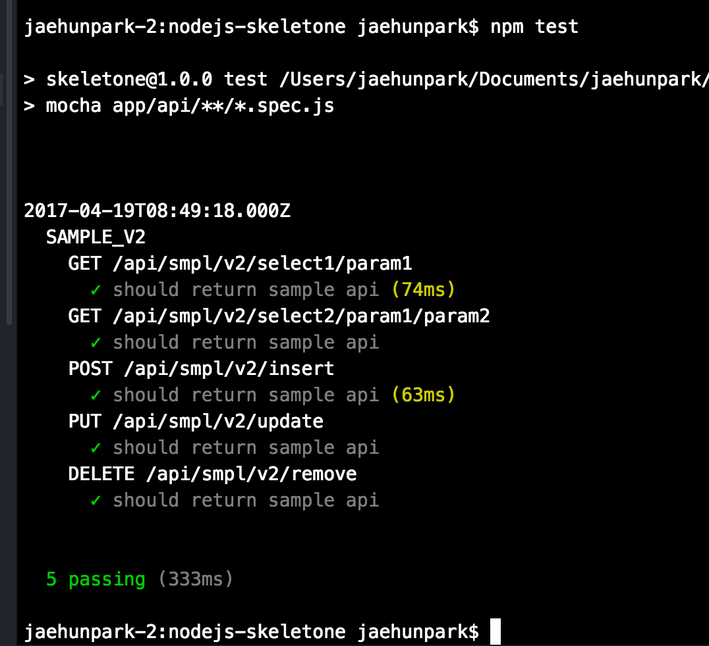
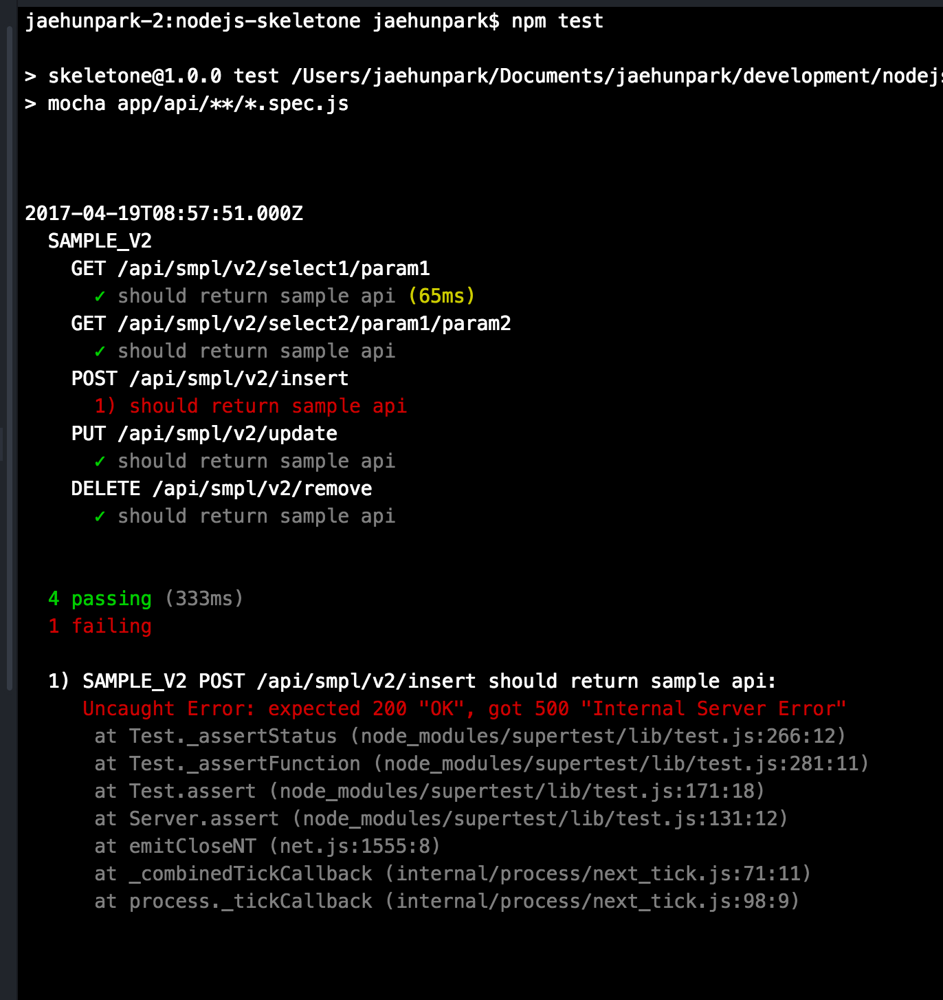

mocha supertest should
mocha
필자가 현재회사에서 하는일은 java 기반의 SI 업무를 담당하고있다.
SI 업무를 담당하니 test라는 개념은 별도의 test case를 따로 작성하는것이아니라,
요구사항 개발을 진행후 제대로 잘동작하는지에대한 행위를 하고 땡 하는 식이다.
mock을 이용한 test case 작성이나, junit을 사용한 test case를 작성하는것은 누군가 강제로 시켜서 하지않는이상, 주도적으로 스스로 하지않을것이다. 요구사항을 빠르게 반영해야하므로 test case 작성은 시간낭비일뿐이니까.
필자는 node기반의 서버에도 관심이 많다. nodejs를 활용하여 java의 junit, mock 과 같은 역활을 수행하는 mocha에 대해서 적어보려고한다.
설치
test framework mocha는 npm을 통해 아주 쉽게 설치할수있다.
-g 옵션을 붙이게되면 개발 머신에 global로 설치를 한다.
필자는 global 설치보다는 해당 프로젝트내에서 필요할때 mocha를 사용할것이기에
프로젝트내의 devDependencies를 추가하였다.
mocha와 흔히들 같이사용하는 패키지로는 api 검증의 supertest와
api 호출에대한 response 검증을 수행하는 should를 사용하는것이 일반적인것 같다.
따라서 필자도해당 패키지들을 mocha와 함께 사용하였다.
모든 패키지를 설치하였다면 package.json은 다음과같을것이다
이제 테스트를위한 준비는 끝이났다.
어떻게 사용하는가
전체적인 test구조는 mocha, 각 test case의 api 호출은 supertest가,
그리고 api response에대한 검증은 should가 담당한다.
mocha docs 의 test case에 대한 pre,post 제공되는 함수는 다음과 같다
간단하게 살펴보면
- before() 모든 테스트들이 수행되기전 단 한번만 실행된다
- after() 모든 테스트들이 수행된후 단 한번만 실행된다
- beforeEach() 각 테스트들이 수행되기전 실행된다
- afterEach() 각 테스트들이 수행된후 실행된다
필자는 mocha를 다음과 같이 사용하였다.
test case를 수행하기전 연결된 db 상태를 체크한후, test case를 진행하고있다.
request(supertest) 를 통하여 api 수행과 응답에 대한 정의와 예상되는 response status와 어떤 data를 request 할지를 정의한다.
필자는 token 이라는 이름으로 jwt token을 header에 실어서보내며,
post와 같은 body 값은 send({param1 : valu1 ..}) 와 같이 사용할수있다.
response에대한 응답으로는 should를 사용하여 response 값들을 검증한다.
어떤 property가 있는지, 해당 propery의 값은 무엇인지에대한 검증을 수행한다.
이제 작성된 test case를 어떻게 실행하는지 알아보자
프로젝트 package.json 상단의 scripts에 test를 정의한다.
프로젝트내에서 mocha를 실행할것이기에, npm 으로 부터 설치된 mocha 실행 경로를 정의후 경로를 설정한다
필자는 app/api/ 경로 내의 모든 spec.js 확장자를 mocha를 이용한 test를 수행할것이므로, 다음과 같이 정의하였다.
다음으로 test를 수행한다

mocha를 기반으로 supertest와 should를 사용하여 test case를 작성해보았다.
필자가 사용해본느낌으로는, error를 뱉을시 error가 왜 발생하였는지에대한 상세한 메시지는 console에 보여주지않는다는점이다.
고의로 에러를 발생해보았다.

예상되는 수행 결과값에만 근거하여 error를 표출한다.
test case를 수행하다 에러가 왜 발생했는지에 대한 메시지를 뿌려주면 좋을것 같은 생각이든다.
견해
많이들 test에대한 방법론으로 TDD와 BDD에 대해서 이야기들한다.
필자는 내공이 부족하여 정확하게 알지는 못하지만 구글링을 통해 얻게된 정보로는 TDD는 테스트주도 개발방법이고, BDD는 스토리 또는 시나리오기반 테스트 개발방법이라는 글들을 보았다.
현재 이글에서 제공하는 방법은 sample api에 대한 테스트를 진행하였으므로 딱히 개발요구사항에대한 스토리는 없으므로 TDD가 적합한듯 하다.
하지만 실제 개발시에는 프로세스 스토리와 시나리오 정의후 test case를 작성하여 BDD 개발 방법론을 따르는것이 좋을것 같다.
해당 api가 왜 존재해야하는지는 스토리 또는 시나리오를 보며 이해를 높일수있을것 같아서다.
쓰지않는 api를 개발을 하진않겠지만 존재하는 이유에 대해서는 BDD를 개발방법을통해 명확히 이해할수있을것 같다.
마지막으로 가장 좋은점은 test case를 작성하게되니 따로 api document를 작성하지 않아도되는 느낌이 들기도한다. (물론 작성하면 더욱더 좋겠죠)
test case에 정의된 api를 호출과 예상결과값만봐도 해당 api가 대충은 어떤역활을 수행하는 api인지 보여주기도한다.
필자는 test case에 익숙하지않지만 분명 좋은 개발 방법론임에는 틀림없는것 같다 .
TDD와 BDD
http://hnsnmn.blogspot.kr/2014/02/tdd-bdd.html
http://asfirstalways.tistory.com/296
http://blog.aliencube.org/ko/2014/04/02/differences-between-bdd-and-tdd/